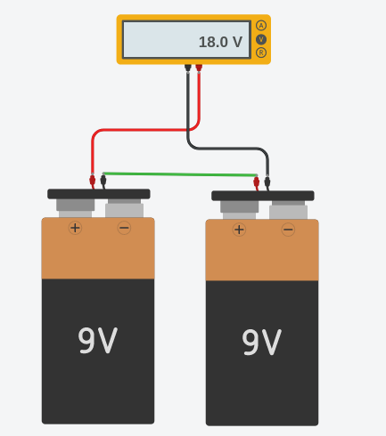

A associação em série será feita quando uma fonte tiver um polo positivo conectado
a um polo negativou de outra fonte sucessivamente para todas as fontes que componham
a séria, como demonstrado no desenho abaixo:

A associação em Paralelo será feita quando uma fonte tiver um polo positivo conectado
a um polo positivo e polo negativo conectado a um polo negativo de outra fonte
sucessivamente para todas as fontes que componham a séria, como demonstrado no desenho abaixo:
em caso de associações em serie soma-se as tensões:
em caso de associações em paralelo soma-se as corrente:
no tikercard temos este 3 tipos de bateria com 9V, 3V e 1,5V:
Como poderia fazer uma fonte com 12V através de uma ligação em serie?